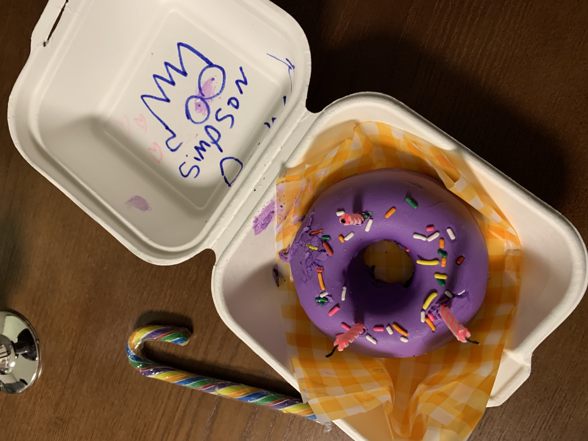

WEB
Nature
CSS
JavaScript
자연이란!
아름다운 하늘, 높고 푸른 산 그리고 넓고 광활한 바다가 있는 바로 그것이 아니겠는가!
대한민국 경주의 자연풍경 사진을 올렸는데 사이즈가 너무 커서 다른 사진으로 대체함

TAG 정리
1.
strong
: 폰트 굵게
2.
u
: underline 밑줄
3.
br
: line breaker 줄바꿈
3-1.
p
: Paragraph 줄바꿈 : 열린/닫힌 태그로 구성되어있음
Please enable JavaScript to view the
comments powered by Disqus.